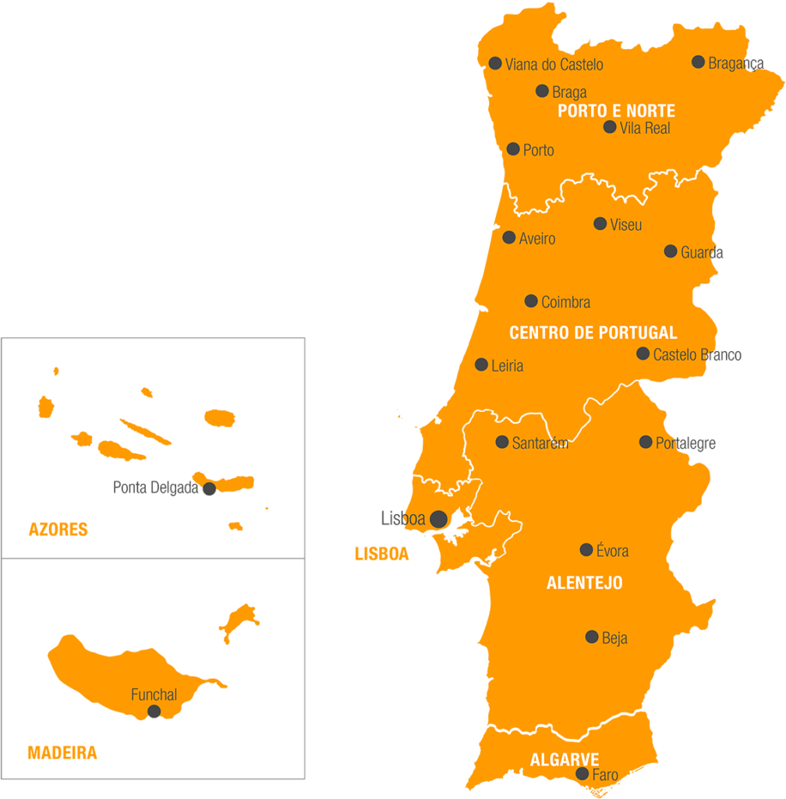
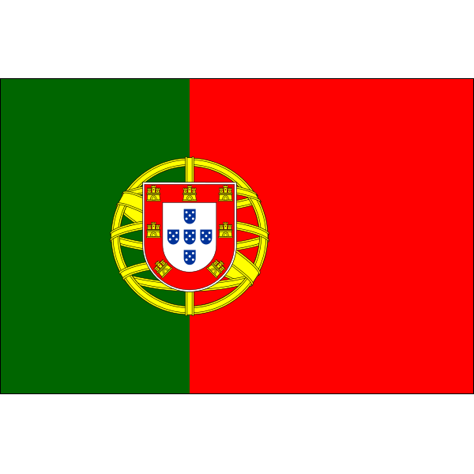

Atendimento ao público: Das 9:00 às 13:00h, De Segunda à Sexta-Feira (Presencial para informações)
Informações por telefone: Telefone: (51) 3061-5767 - Das 14:30h às 16:00h, de segunda-feira à quinta-feira.
Contato sobre:
- Informações diversas.- Vistos de residência, de estada temporária, estudos, trabalho, para aposentados ou para turismo em Portugal.
- Nacionalidade portuguesa, transcrição de casamento, de óbito, pedido de certidões, certifica de igualdade de direitos e informações sobre agendamentos para nacionalidade/casamento/óbitos.
- Reconhecimento de assinaturas, recenseamento militar, certificados de vida, de bagagem, de residência.
- Pedidos/renovação de passaportes e pedidos/renovação de cartão do cidadão, inscrição consular e informações sobre agendamentos de passaporte ou de cartão do cidadão.
AVISO!
Por tratar-se de um projeto para exercitação de programação em HTML, CSS e JavaScript, este site NÃO apresenta informativos de "documentação necessária" e "valores".
Quaisquer informações detalhadas sobre os serviços deve ser prioritariamente visualizada no site do Vice-Consulado.
Repositório no GitHub
Obs.: No link acima é possível acessar o conteúdo utilizado
para programação desta página em HTML, CSS e JavaSrcipt.
VICE-CONSULADO DE PORTUGAL
EM PORTO ALEGRE
O Vice-Consulado de Portugal em Porto Alegre é o posto consular português com jurisdição no Estado do Rio Grande do Sul, Brasil.
No exercício das suas funções no Estado do Rio Grande do Sul cabem ao Vice-Consulado de Portugal em Porto Alegre as seguintes atribuições:
a) execução da política externa, de acordo com as orientações gerais das missões diplomáticas;
b) protecção dos direitos e dos legítimos interesses do Estado
Português e dos seus nacionais, pessoas singulares ou colectivas, dentro dos limites permitidos pelo direito internacional e pelas leis locais;
c) promoção e valorização dos portugueses nos países de
acolhimento;
d) promoção e divulgação da língua e da cultura portuguesas;
e) coordenação da política do ensino português no estrangeiro;
f) promoção e o desenvolvimento das relações comerciais, económicas, culturais e científicas entre pessoas, singulares ou colectivas, nacionais e estrangeiras;
g) cooperação com autoridades nacionais e estrangeiras.
Endereço:
Rua Prof. Annes Dias, 112 - Sala 100210º andar - Centro Histórico
90.020-090 - Porto Alegre - RS
Atendimento ao público:
Das 9:00 às 13:00h (Presencial)De Segunda à Sexta-Feira
Informações por telefone:
Telefone: (51) 3061-5767Das 14:30h às 16:00h, de segunda-feira à quinta-feira.
Elogios, Reclamações e Sugestões
- O utente que quiser elogiar, reclamar ou fazer alguma sugestão, deverá enviar por e-mail para portoalegre@mne.pt, com conhecimento (cc) para sac@mne.pt.
- O utente deverá usar uma linguagem neutra, sem palavras ofensivas aos funcionários e se forem usadas palavras menos próprias, não será tida em consideração a sua informação, deverá informar exclusivamente o fato acontecido ou alegações que caibam no âmbito de aplicação do Posto - Consular em questão e da Atividade Consular.
- Não serão aceites considerações de outra espécie.
- No e-mail a ser enviado, favor mencionar o nome completo, nacionalidade e número do telemóvel (Celular).
SERVIÇOS CONSULARES
PARA AS PESSOAS RESIDENTES NO RS
Com o objetivo de melhorar o atendimento ao público este Vice-Consulado passou a funcionar com agendamento prévio para atendimento ao balcão dos serviços consulares mais procurados (cartão de cidadão/passaporte/nacionalidade/casamento/óbito). Evitam-se assim filas e é garantido um atendimento mais organizado para quem procura os nossos serviços.
O Consulado presta esclarecimentos adicionais, em caso de dúvidas sobre algum documento ou ato que pretenda, preferencialmente através de mensagem enviada por email para portoalegre@mne.pt.
Informa-se que é obrigatório fazer o agendamento para a realização dos serviços abaixo indicados. Agradecemos que não façam agendamentos para a mesma pessoa em vários dias. É apenas um horário por pessoa e para cada serviço solicitado.
Se não for possível comparecer no dia agendado, pedimos que entre novamente na agenda onde realizou o agendamento e faça o cancelamento do referido horário.
Solicitamos que ao agendar e antes de comparecer a este vice-consulado, faça verificação da documentação necessária para o seu atendimento, pois se trouxer os documentos errados, terá que fazer, obrigatoriamente, um novo agendamento.
O pagamento é realizado no balcão deste vice-consulado e no ato da entrega da documentação, se esta estiver correta.
INSCRIÇÃO CONSULAR
Os portugueses residentes no estrangeiro devem proceder à sua inscrição no posto consular da área da sua residência.
A inscrição é um acto consular, pelo qual a identificação dos cidadãos nacionais fica a constar nos arquivos do posto consular em cuja área de jurisdição fixaram residência ou se encontram ocasionalmente.
A sua inscrição é um acto importante : em caso de problema, pois permite ao posto dispor dos contactos dos portugueses que residem ou transitam pela área consular.
Este acto é imprescindível para a obtenção de qualquer tipo documento que pretenda obter junto de um posto consular.
Em caso de roubo ou extravio de documentos pessoais, será possível identificar rapidamente o cidadão português.
IMPORTANTE: A inscrição consular só pode ser feita se o interessado tiver nacionalidade portuguesa.
Existem dois tipos de inscrição consular:
1) Inscrição consular definitiva: é exigida a presença da pessoa a inscrever, munida do bilhete de identidade ou cartão do cidadão válido e de duas fotografias 3 x 4 cm, actualizadas e a cores e comprovante de residência.
Os menores de 10 anos podem ser inscritos a pedido dos seus representantes legais, presentes, desde que seja exibida prova bastante de que o menor se encontra na área de jurisdição deste Vice-Consulado. Para os menores de 10 anos que não possuam bilhete de identidade, é suficiente uma certidão de nascimento ou um certificado de nacionalidade.
2) Inscrição consular provisória: quando o interessado não apresenta o bilhete de identidade ou cartão do cidadão válido, pode ser feita uma inscrição consular provisória, mediante a apresentação dos documentos de identificação que possuir, RG brasileiro, carta de condução, bilhete de identidade caducado, passaporte nacional válido ou caducado, etc. Também poderá ser feita nos casos em que não se possa deslocar ao Vice-consulado. Para isso, basta enviar um email com pdf do seu documento de identificação e do justificativo da sua residência, assim como o seu contacto telefónico. A inscrição será confirmada quando se deslocar ao Vice-consulado.
Caso o cidadão só tenha inscrição consular provisória não poderão ser emitidos pelo Vice-consulado documentos para os quais seja necessário a apresentação de bilhete de identidade.
A inscrição consular deve ser mantida actualizada. Caso queira solicitar a alteração de endereço e/ou contacto, envie e-mail a pedir ATUALIZAÇÃO DE INSCRIÇÃO, com nome completo, filiação, número do bilhete de identidade/cartão de cidadão, data de nascimento, endereço e telefone para a inscrição (registo) consular é comprovada através do CERTIFICADO DE INSCRIÇÃO CONSULAR.
Diferente da simples inscrição consular, que é um documento interno do Consulado, o certificado de inscrição consular (ou cédula consular) é um documento solicitado pela Polícia Federal brasileira a alguns cidadãos portugueses para fins de documentação e registro civil.
CARTÃO DO CIDADÃO
DEFINIÇÃO E CONTEÚDO:
O Cartão de Cidadão (CC) é o documento de identificação multifuncional dos cidadãos portugueses, em formato de smart card, com um chip de contacto integrado, que veio substituir cinco cartões de identificação atualmente existentes:
- Bilhete de Identidade,
- Cartão da Segurança Social,
- Cartão de Contribuinte,
- Cartão do Serviço Nacional de Saúde,
- Cartão de Eleitor.
O CC permite a identificação visual e presencial de forma segura dos cidadãos portugueses, bem como a identificação e autenticação eletrónica em atos informatizados, exibindo:
- Na frente, a fotografia e os elementos de identificação civil;
- No verso, os números de identificação dos diferentes organismos cujos cartões agrega e substitui, uma zona de leitura óptica e o chip de contacto, com os certificados digitais (para autenticação e assinatura eletrónica).
Quanto ao número de identificação fiscal (que equivale ao CPF brasileiro), é gerado somente quando o cidadão tem ou teve movimentação financeira em Portugal. Neste caso, alguns dias após a execução do cartão de cidadão, o requerente receberá uma carta do Ministério das Finanças português. Trata-se apenas de um protocolo, devendo o requerente, se assim o entender, indicar um representante fiscal em Portugal.
O CC é um documento com um formato mais moderno e mais atual que concentra os seus dados pessoais num único documento com uma maior segurança, porém, não há a necessidade de substituir o seu bilhete de identidade enquanto o mesmo estiver válido.
Quais as funcionalidades de identificação electrónica do CC?
O cartão de cidadão possibilita: a autenticação electrónica do cidadão perante serviços públicos e privados; o envio de informação de identificação pessoal nos contactos com a Administrarão Pública ou em transacções autorizadas pelo cidadão; a assinatura digital de documentos, recorrendo ao certificado digital qualificado, que tem disponível, com o mesmo valor da assinatura manuscrita.Qual o prazo de validade do CC?
5 anos. O CC deve ser renovado a partir de 6 meses antes de seu vencimento ou quando tenha sofrido alteração de dados pessoais do cidadão nele constantes.Quem pode ter o CC?
- Cidadãos com nacionalidade portuguesa (A obtenção do CC é obrigatória para todos os cidadãos nacionais, residentes em Portugal ou no estrangeiro, a partir dos seis anos de idade ou logo que a sua apresentação seja exigida para o relacionamento com algum serviço público, podendo também ser efetuado se pretender substituir qualquer um dos segs cartões: BI, cartão de contribuinte, cartão de segurança social e cartão do serviço nacional de saúde).- Cidadãos brasileiros ao abrigo do Tratado de Porto Seguro (brasileiros residentes em Portugal e beneficiários do estatuto de igualdade).
Onde pode ser solicitado o CC?
- Em Portugal, nos Serviços de Identificação Civil; nas Conservatórias do Registo Civil; nas Lojas do Cidadão ou em serviços equivalentes;- No posto consular com jurisdição na sua área de residência (este Vice-Consulado tem jurisdição sobre o Rio Grande do Sul)
AVISOS:
- Para fazer o CC ou renová-lo, o requerente deverá estar obrigatoriamente inscrito neste Vice-Consulado, para maiores informações deverá deverá acessar "Inscrição Consular" no ítem "Serviços Consulares".- Só poderá ser dado seguimento ao pedido se forem apresentados todos os documentos necessários e cumpridos os procedimentos abaixo identificados.
- Caso haja dúvidas ou dificuldades na cabal identificação do requerente o Vice-Consulado poderá ter de solicitar documentação adicional à aqui referida.
- Só o estado civil e nome do requerente e/ou seus progenitores que constem do registo civil português poderão ser considerados para emissão de CC.
- Tem-se verificado que muitos cidadãos portugueses residentes no estrangeiro, solicitam a emissão do CC durante as férias em Portugal. Deverão mencionar, nestes casos, que residem no estrangeiro e pedir para levantar o documento no Consulado da área onde residem.
SERVIÇOS:
- Fazer o CC pela 1ª vez- Renovação do CC
- Alteração Morada CC
PASSAPORTE
O passaporte é um documento de viagem individual, que permite ao seu titular a entrada e saída do território nacional, bem como do território de outros Estados que o reconheçam para esse efeito.
Actualmente Portugal emite aos seus cidadãos o PASSAPORTE ELECTRÓNICO PORTUGUÊS (PEP).
PASSAPORTE ELECTRÓNICO PORTUGUÊS (PEP)
O que é:
O passaporte electrónico português (PEP) é um documento de viagem individual, que permite ao seu titular a entrada e saída do território nacional, bem como do território de outros Estados que o reconheçam para esse efeito.
Este tipo de passaporte contém um chip onde ficam armazenados todos os dados do titular, permitindo a leitura automática em aeroportos e fronteiras.
Por isso, o Passaporte electrónico, a forma mais rápida de passar a fronteira! Ao entrar ou sair do Espaço Schengen, evite as filas, graças à simplicidade de utilização do sistema RAPID (Reconhecimento Automática de Passageiros Identificados Documentalmente).
O sistema RAPID é seguro e totalmente automatizado; a verificação do passaporte e dos dados biométricos de cada utilizador é processada com grande celeridade, abrindo-se a porta da fronteira.
Quem pode ter:
Têm direito à titularidade de passaporte comum os cidadãos de nacionalidade portuguesa. Só o próprio, presencialmente, pode requerer o passaporte.No caso de menores de 18 anos, cidadãos interditos ou inabilitados, o passaporte é requerido por quem exerce o poder paternal, a tutela ou a curatela.
Onde requerer:
As pessoas com nacionalidade portuguesa residentes no Rio Grande do Sul devem requerer o passaporte no Vice-Consulado de Portugal em Porto Alegre, em qualquer dia útil, entre as 9:00 e as 13:00 horas, devendo fazer o agendamento online desse atendimento (ver abaixo ou na pagina ATENDIMENTO).Também pode ser requerido durante as permanências consulares que o Vice-Consulado faz a outras cidades do Estado do RS.
Atenção: Se ainda não tiver Inscrição Consular neste Vice-consulado terá de a promover junto com o pedido de PEP.
Validade:
O passaporte comum é válido por um período de 5 anos.No caso dos menores de idade inferior a 4 anos, a validade do passaporte comum é de 2 anos.
PEDIDOS DE VISTOS
1 - Turismo para Brasileiros.
Portugal é um país amigo, seguro, de clima ameno e com boa comida, ideal para passear com a família. tem entre as suas principais atrações a cultura, a gastronomia e os vinhos, as praias, o golfe, a história, a variedade das paisagens, e sobretudo, a hospitalidade do povo português, um povo afável, aberto e sincero.Requisitos para viajar:
Se pretende viajar até Portugal a turismo, saiba que nos termos da legislação em vigor, os cidadãos brasileiros não necessitam de visto para entrar em Portugal, por um período de 90 dias, por semestre, nos casos de:
- Fins Artísticos
- Culturais
- Científicos
- Empresariais
- Jornalístico
- Desportivo (períodos curtos)
- Congressos
- Turístico
Nota: Este prazo poderá ser prorrogado em Portugal, mediante autorização do Serviço de Estrangeiros e Fronteiras - SEF, não podendo a prorrogação ultrapassar 90 dias.
Para qualquer outra situação é exigido visto aos cidadãos brasileiros, pelo que deverá indicar-nos a que fim se destina a vossa deslocação a Portugal.
2 - Cidadãos europeus para morarem em Portugal.
Tenho cidadania europeia (cidadão da UE/EEE/Suíça). Preciso de visto para morar em Portugal?Não, não precisa de visto, mas deve procurar a Câmara Municipal para solicitar um Certificado de Registo de Cidadão da União Europeia, e desde que reúna uma das seguintes condições:
Exerça no território português uma actividade profissional subordinada ou independente; Disponha de recursos suficientes para si próprio e para os seus familiares, bem como um seguro de saúde, desde que tal seja exigido no Estado membro da sua nacionalidade aos cidadãos portugueses;
Esteja inscrito num estabelecimento de ensino público ou privado, oficialmente reconhecido, desde que comprove, mediante declaração ou outro meio de prova à sua escolha, a posse de recursos financeiros suficientes para si próprio e para os seus familiares, bem como disponha de um seguro de saúde, desde que tal seja exigido no Estado membro da sua nacionalidade aos cidadãos portugueses;
Seja familiar que acompanhe ou se reúna a um cidadão da União abrangido pelas alíneas anteriores.
Têm igualmente o direito de residir no território nacional por período superior a três meses os familiares que não tenham a nacionalidade de um Estado membro que acompanhem ou se reúnam a um cidadão da União que preencha as condições a que se referem as alíneas a), b) ou c) do número anterior.
O que é o Certificado de Registo de cidadão da União Europeia?
O Certificado de Registo de cidadão da União Europeia formaliza o direito de residência em Portugal. Ele deve ser pedido se o cidadão da UE/EEE/Suíça permanecer no país por um período superior a três meses. Até este período o referido cidadão apenas necessita de ter um Bilhete de Identidade ou passaporte válidos.
O direito de entrada, permanência e residência em Portugal abrange os cidadãos dos países da União Europeia (UE), do Espaço Económico Europeu (EEE), do Principado de Andorra e Suíça, bem como os seus familiares.
Quem pode requerer?
Cidadão da União Europeia, Islândia, Liechtenstein, Noruega, Principado de Andorra e Suíça.
Quando devo solicitar esse certificado?
Esse certificado precisa ser solicitado no prazo de 30 dias após decorridos três meses da entrada no território nacional.
Onde posso requerer?
Câmara municipal da área de residência (em Portugal).
3 - Cartão de residência para familiares de cidadãos europeus.
O que é o Cartão de Residência de familiar do cidadão da União nacional de Estado terceiro?O Cartão de Residência de familiar do cidadão da União nacional de Estado terceiro que formaliza o direito de residência em Portugal.
Ele deve ser pedido se o familiar de Estado terceiro permanecer em Portugal por um período superior a três meses.
O direito de entrada, permanência e residência em Portugal abrange os cidadãos dos países da União Europeia (UE), do Espaço Económico Europeu (EEE) e Suíça, bem como os seus familiares.
Quem pode solicitar o Cartão de Residência?
Qualquer familiar de cidadão da União Europeia, Islândia, Liechtenstein, Noruega e Suíça nacional de Estado terceiro.
Quem pode ser considerado membro de família?
São considerados membros de família:
- O cônjuge de um cidadão da União;
- O parceiro com quem um cidadão da União vive em união de facto, constituída nos termos da lei, ou com quem o cidadão da União mantém uma relação permanente devidamente certificada, pela entidade competente do Estado membro onde reside;
- O descendente directo com menos de 21 anos de idade ou que esteja a cargo de um cidadão da União, assim como o do cônjuge ou do parceiro na acepção da subalínea anterior;
- O ascendente directo que esteja a cargo de um cidadão da União, assim como o do cônjuge ou do parceiro;
Quando devo solicitar o Cartão de Residência?
No prazo de 30 dias após decorridos três meses da entrada em Portugal.
Onde devo solicitar o Cartão de Residência?
Mediante agendamento prévio no SEF - Serviço de Estrangeiros e Fronteiras, em Portugal.
Os familiares podem trabalhar?
Os membros da família terão o Cartão de Residência e podem trabalhar legalmente em Portugal.
4 - Reagrupamento familiar.
O que é o Reagrupamento Familiar?Reagrupamento Familiar é um tipo de pedido pelo qual a família de um titular de visto de residência, possa ir também morar em Portugal.
Os familiares de titulares de vistos de estada temporária não têm direito ao Reagrupamento Familiar.
Quem pode solicitar o Reagrupamento Familiar?
Todos os cidadãos estrangeiros, que não sejam nacionais de Estados Membros da UE, do Espaço Económico Europeu e Suíça, familiares de um residente legal em Portugal que pretendam juntar-se ao titular de Autorização de Residência válida, e que tenham entrado legalmente em Portugal ( a turismo por exemplo ) podem solicitar o Reagrupamento Familiar.
Quem pode ser considerado membro de família?
São considerados membros de família:
O cônjuge;
Os filhos menores ou incapazes a cargo do casal ou de um dos cônjuges;
Os filhos maiores, a cargo do casal ou de um dos cônjuges, que sejam solteiros e se encontrem a estudar num estabelecimento de ensino em Portugal;
Os ascendentes na linha reta e em 1.º grau do residente ou do seu cônjuge, desde que se encontrem a seu cargo;
Os irmãos menores, desde que se encontrem sob tutela do residente, de harmonia com decisão proferida pela autoridade competente do país de origem e desde que essa decisão seja reconhecida por Portugal.
O parceiro que mantenha, em território nacional ou fora dele, com o cidadão estrangeiro residente uma união de facto, devidamente comprovada nos termos da lei ( há mais de 2 anos );
Atenção: Familiares de solicitante de visto residência já autorizado, cuja naturalidade seja de país que exija visto de entrada em Portugal, devem aqui solicitar um visto de curta duração.
Como solicitar o Reagrupamento Familiar?
O requerente de Reagrupamento Familiar, com o titular da residência ( o portador do visto principal ) deverá procurar o SEF – Serviço de Estrangeiros e Fronteiras, em Portugal.
Relembrando: Após a entrada em território nacional munido do visto de residência, deve o familiar do requerente dirigir-se ao SEF – Serviço de Estrangeiros e Fronteiras, para solicitar a concessão de autorização de residência.
Os “Reagrupados” podem trabalhar?
Os membros da família terão o título de Residência e podem trabalhar legalmente em Portugal.
5 - Lista de países cujo cidadão estrangeiro que está residindo legalmente no Brasil, está isento de pedir visto para entrar em Portugal para turismo.
Se está a planear viajar para Portugal, certifique-se de que possui o visto adequado para a sua estadia e tome as providências necessárias para a sua obtenção em tempo útil.Para visualizar ... Clique aqui
6 - Lista de países cujo cidadão estrangeiro que está residindo legalmente no Brasil, está obrigado a pedir visto para entrar em Portugal para turismo.
Se está a planear viajar para Portugal, certifique-se de que possui o visto adequado para a sua estadia e tome as providências necessárias para a sua obtenção em tempo útil.Para visualizar ... Clique aqui
7 - Lista de países cujo cidadão estrangeiro que está residindo legalmente no Brasil, está sujeito a pedir visto para uma para uma escala aeroportuária em Portugal.
Se está a planear viajar para Portugal, certifique-se de que possui o visto adequado para a sua estadia e tome as providências necessárias para a sua obtenção em tempo útil.Para visualizar ... Clique aqui
8 - Procedimentos, instruções e documentação para pedidos de vistos de Estada Temporária, de Residência e de Schengen.
Tipos de vistos que podem ser concedidos pelos Postos Consulares Portugueses:
Vistos Nacionais
- Visto de Estada Temporária - Destina-se a permitir a entrada para Portugal por um período igual ou inferior a 1 ano. Será válido pela duração da estada e para múltiplas entradas em Portugal.
- Visto de Residência - Válido para duas entradas e por 4 meses, período durante o qual o seu titular deverá solicitar junto ao S.E.F. - Serviço de Estrangeiros e Fronteiras, em Portugal, um título para fixação de residência para períodos superiores a 1 ano.
Vistos Schengen
- Visto de Curta Duração - Permite a entrada de estrangeiros, com residência permanente no Brasil, para períodos curtos de 1 a 90 dias.
- Visto de Escala Aeroportuária - Permite a passagem de estrangeiros, com residência permanente no Brasil, através de zonas internacionais dos aeroportos dos Estados Membros.
- Os interessados que residem em outros Estados, deverão entrar em contato com o Consulado de Portugal da sua área de jurisdição.
- Este Vice-Consulado atente somente os residentes deste Estado.
- Atenção: Se possível, os interessados deverão solicitar os seus vistos 90 dias antes de começar o ano lectivo ou a da sua viagem para Portugal.
- Traga seu check-list impresso com o cabeçalho devidamente preenchido, datado e assinado.
- Não existe agendamento para pedidos de visto.
- Após o recebimento da documentação, a mesma será analisada e o(a) interessado(a) será contactado por e-mail até em 10 dias úteis.
- Os valores dos pedidos de vistos serão comunicados por e-mail.
- A ausência de qualquer um dos documentos solicitados acarretará no não recebimento de seu processo.
- Só será dado seguimento aos pedidos de visto que estiverem com a documentação completa e pago.
- Favor entregar ou enviar toda a documentação em ordem, conforme o check-list, já organizada e todos os requerimentos, formulários e declarações deverão estar datadas e assinadas e com a foto colada no requerimento.
- Deverão entregar o passaporte juntamente com a documentação do pedido de visto, o passaporte ficará retido e entregue somente quando o visto for aprovado.
- Todos os documentos deverão ser apresentados na ordem das listas, impressos em papel branco A4 apenas em frente, sem grampos, clips, post-its ou folhas de rosto e fora de qualquer tipo de pasta.
- A apresentação dos documentos não garante concessão de visto portanto, este Vice-Consulado reserva-se ao direito de solicitar outros documentos que não consta na listado e sempre que considerarmos necessário.
- Os pedidos de visto recebidos com a documentação incompleta poderão ser devolvidos pelo correio normal, ficando assim sob responsabilidade do interessado.
- Após o pagamento do pedido de visto, e a documentação em ordem, o pedido de visto será introduzido no sistema RPV, e poderá demorar em média 60 dias.
- Esse prazo poderá ser prorrogado automaticamente, sem aviso prévio, se isso acontecer, o pedido de visto poderá ser liberado em um prazo mais longo.
- Lembramos que não deverão comprar os bilhetes aéreos sem ter o visto autorizado.
- Deverão solicitar o seu visto com antecedência, de preferência 90 dias.
- O Vice-Consulado não é responsável por encargos resultantes da necessidade de alterar a data da viagem.
- Somente o próprio interessado deverá solicitar o visto.
- Não aceitamos intermediador, empresário, procurador ou agenciadores.
- Nenhuma pessoa, além dos funcionários deste Vice-Consulado, está apta a dar informações sobre vistos, isso abrange professores, universidades, agências de viagem e etc.
- Favor preencher com letra legível todos os formulários, e deverão estar todos datados e assinados.
- O requerente não deverá sair do território brasileiro sem o visto adequado.
- Todos os documentos deverão estar obrigatoriamente na língua portuguesa, não será aceito documentos em outra língua.
- Não aceitamos fotos dos documentos tiradas de celular.
- Estão isentos do pagamento de emolumentos aos que beneficiem de bolsas de estudo atribuídas pelo Estado Português.
- O valor pago (depositado ou transferido) está sujeito a alteração decorrente de lei ou de taxa cambial. Diferença do pagamento a maior ou a menor será realizada no dia do seu comparecimento neste Vice-Consulado.
- Caso o pedido de visto seja indeferido liminarmente, não haverá reembolso de qualquer espécie ou quantia, uma vez que os custos referem-se ao encaminhamento e tratamento do pedido de visto, e não ao visto propriamente dito.
- Favor não entrarem em contato por telefone, somente por e-mail (info.portoalegre@mne.pt).
- As redes sociais não devem ser utilizadas para este efeito.
Instruções e Procedimentos
1) Somente enviem pelo correio, se já tiverem a documentação completa e enviar para:Vice-Consulado de Portugal de Portugal, Setor de Vistos. Rua Prof. Annes Dias, 112 – Sala 1002 – 10º andar, Centro Histórico - CEP 90.020-090 – Porto Alegre/RS.
ou
2) Poderão entregar a documentação neste Vice-Consulado somente das 10 às 12 h em envelope já fechado com toda a documentação solicitada. O envelope não poderá estar aberto e não poderão finalizar a documentação do visto nas dependências deste Vice-Consulado. Qualquer pessoa poderá entregar o envelope.
REGISTO CIVIL
O Vice-Consulado de Portugal em Porto Alegre é um órgão especial de registo civil, relativamente aos portugueses residentes habitualmente no Rio Grande do Sul - Brasil ou que aí se encontrem acidentalmente.
Compete-lhe lavrar actos de registo civil, nomeadamente de:
- Nascimento ocorrido no estrangeiro, atributivo de nacionalidade;
- Casamento no estrangeiro de dois portugueses ou de um português e estrangeiro;
- Óbito de português ocorrido no estrangeiro.
O Vice-Consulado em Porto Alegre também emite certidões de registo civil (nascimento,
casamento ou óbito) imprescindíveis à prática de práticamente todos os actos de vida civil de cidadãos portugueses, deverão solicitar pessoalmente ao Balcão do Vice-Consulado.
BILHETE DE IDENTIDADE
O QUE É:
Principal documento de identificação dos cidadãos, basta, só por si, para provar a identidade civil do seu titular perante quaisquer autoridades, entidades públicas ou privadas.O Bilhete de identidade é válido em todo o território nacional e nos países da União Europeia e por agora vigora em paralelo com o Cartão do Cidadão, estando gradualmente a ser substituído por esse documento de identificação.
VALIDADE:
- Por 5 anosPEDIDO DE BI:
Os portugueses residentes no estrangeiro podem pedir o Bilhete de identidade no Posto consular da sua área de residência.Se ainda não tiver Inscrição Consular neste Vice-consulado terá de a promover junto com o pedido de BI/CC. Veja aqui o que precisa para a Inscrição Consular
Apenas o próprio pode requerer o Bilhete de Identidade e tem de se apresentar pessoalmente no ato de pedido.
REGISTO DE NASCIMENTO
O nascimento de indivíduos que tenham direito à nacionalidade portuguesa devem ser registados no posto consular da sua área de residência.
O registo de nascimento é feito:
a) Por inscrição, mediante declaração dos pais, (os quais devem estar inscritos nos serviços consulares), ou;b) Por transcrição, com base em certidão de nascimento emitida pelas autoridades locais do país onde ocorreu o nascimento. Poderá o registo de nascimento ser efectuado por alguém que se identifique devidamente e que tenha a representação legal do registando ou esteja habilitado por procuração para o fazer. A presença do registando (bébé) não é obrigatória.
IMPORTANTE: no caso de registo de nascimento por inscrição, é exigida a presença dos pais ou dos declarantes habilitados para o fazer.
As formalidades/requisitos são diferentes consoante a idade do registando: Se o nascimento tiver ocorrido há mais de 14 anos, o registo só pode ser efectuado mediante a organização do processo de autorização para inscrição tardia de nascimento e deverá consultar as instruções para aquisição de nacionalidade portuguesa por filho de portugues(es).
Veja os documentos e demais requisitos em: Nacionalidade escolhendo depois a situação concreta.
Informação importante sobre a composição do nome:
A partir do momento em que uma criança é registada, ela passa juridicamente a ter um nome, sendo o seu nome completo o que constar do assento de nascimento.A seguir resume-se o que determina a lei portuguesa:
Nome completo: deve compor-se no máximo de 6 vocábulos gramaticais, simples ou compostos, dos quais só 2 podem corresponder ao nome próprio e 4 a apelidos.Nomes próprios: devem ser portugueses e admitidos pela onomástica portuguesa ou adaptados gráfica e foneticamente à língua portuguesa e não devem suscitar dúvidas acerca do sexo. Aos irmãos não devem ser dados os mesmos nomes próprios, a não ser que um deles seja já falecido.
Apelidos: na ordem desejada pelos pais, são escolhidos de entre os que pertençam a ambos, ou a só um dos pais, ou cujo uso qualquer um deles tenha direito (por ex. apelido do avó que não conste do nome do pai).
Composição originária do nome: caso a criança nascida no estrangeiro tenha no registo local vários nomes próprios (por exemplo, em França, é habitual ter 3 nomes próprios), os mesmos podem figurar no registo português com idêntica grafia. Neste caso, o registo português deverá corresponder estritamente ao registo francês, pelo o que não será possível acrescentar outros nomes.
CASAMENTO
Os portugueses residentes no Rio Grande do Sul que pretendem casar ou um português que pretenda casar com um estrangeiro, poderão solicitar ao Vice-Consulado que registe o seu casamento. É necessário que pelo menos um dos nubentes seja cidadão português.
Se o casamento tiver sido realizado perante as autoridades locais em registo civil brasileiro ou perante ministro do culto católico, o assento de casamento será lavrado por transcrição.
Se o casamento for efectuado perante o titular do Vice-Consulado, o respectivo assento de casamento será lavrado por inscrição.
Capacidade Matrimonial:
A capacidade matrimonial de cidadãos portugueses no estrangeiro é atestada através de um Processo preliminar de publicações.Ou seja, para que um cidadão português se possa casar no estrangeiro (em registo civil brasileiro, perante ministro do culto católico no Brasil ou num posto consular português), é necessário o posto consular da área de residência do nubente de nacionalidade portuguesa organizar, previamente ao casamento ou sua transcrição no Registro Civil português, um processo preliminar de publicações, que visa a averiguar se há algum impedimento legal à realização do casamento.
Os nubentes deverão optar pelo regime de bens do casamento.
No final da organização do processo preliminar não se verificando a existência de nenhum dos impedimentos matrimoniais previsto na lei portuguesa que pudesse obstar à realização do seu casamentoserá lavrado pela Vice-Cônsul um despacho final, que, sendo favorável, servirá de base à emissão do Certificado de Capacidade Matrimonial, no qual se declara que os nubentes podem contrair casamento.
O casamento deverá ser celebrado dentro dos seis meses seguintes à data do despacho final.
Atenção: o Certificado de Capacidade Matrimonial destina-se exclusivamente a provar a capacidade do(a) nubente português(a) - (o noivo, a noiva ou ambos).
Para solicitarem a transcrição do casamento, deverá fazer obrigatoriamente o agendamento, que está na página inicial deste site.
TRANSCRIÇÃO DE CASAMENTO CELEBRADO NO BRASIL
Os interessados que residirem em outro Estado, deverão entrar em contato com o Consulado de Portugal da sua área de jurisdição.Manter o estado civil atualizado é um dos principais deveres do cidadão português que reside fora de Portugal. Além disso, a atualização do estado civil é indispensável para se renovar documentos de identificação como o cartão de cidadão e o passaporte. Assim, o cidadão português que casou no estrangeiro perante as autoridades locais pode (e deve) transcrever o seu casamento na ordem jurídica portuguesa de modo a passar a constar o seu casamento em Portugal.
O pedido de transcrição do assento de casamento pode ser requerido no consulado da área de residência, a todo o tempo, por qualquer interessado.
O casamento contraído no estrangeiro, perante as autoridades locais competentes, ou perante os ministros do culto católico, deve ser precedido do processo preliminar de publicações, organizado perante os agentes consulares. Assim, se o casamento a transcrever não foi precedido de processo preliminar, o agente consular só poderá realizar a sua transcrição depois de organizar " à posteriori" o respectivo processo, e, neste caso, vigorará (para o ordenamento jurídico português) o regime imperativo de separação de bens, ficando prejudicada qualquer convenção antenupcial que os nubentes tenham eventualmente outorgado. (Obs: A legislação interna de alguns países poderá limitar ou impedir a aplicação destas medidas.)
No final da organização do processo preliminar será lavrado um despacho final que, sendo favorável, servirá de base à emissão pelas autoridades consulares do certificado de casamento.
Para solicitarem a transcrição do casamento, deverá fazer obrigatoriamente o agendamento.
REGISTO DE ÓBITO
Falecimento de pessoa com nacionalidade portuguesa:
O falecimento de nacional português, inclusive com dupla nacionalidade, é um facto jurídico de registo obrigatório, independentemente de ocorrer em Portugal ou no estrangeiro, devendo ser informado ao Registro Civil português. Para efeito é necessário requerer, junto ao Consulado, a transcrição de óbito.IMPORTANTE: Se, ao falecer, o nacional português, inclusive com dupla nacionalidade, era casado(a) ou viúvo(a), e o estado civil do falecido não estiver atualizado no Registro Civil português, o(a) requerente deverá providenciar, junto com o pedido de transcrição de óbito, a atualização do estado civil do(a) falecido(a).
Quem pode fazer a declaração de óbito:
- o parente capaz mais próximo do falecido que estiver presente na ocasião do óbito;- outros familiares do falecido que estiverem presentes;
- as autoridades locais;
- o ministro de qualquer culto presente no momento do falecimento;
- a pessoa ou entidade encarregada do funeral;
- as autoridades administrativas ou policiais no caso de abandono do cadáver.
Onde deve ser feita a declaração do óbito:
No Posto Consular português da área de residência (sendo obrigatório o agendamento).Documentos necessários para transcrever o óbito neste Vice-Consulado:
1. Requerimento para transcrição de óbito, devidamente preenchido e sem rasuras. (O requerimento deverá ser datado e assinado pelo(a) requerente na presença do funcionário do Vice-Consulado.)2. Original da certidão de óbito de inteiro teor emitida há menos de um ano (A certidão de inteiro teor traz todas as informações do registro de óbito. No título do documento está escrito “CERTIDÃO DE ÓBITO – INTEIRO TEOR”.)
3. Uma fotocópia simples da certidão de nascimento portuguesa do falecido, ou de qualquer documento emitido pelas autoridades portuguesas, caso o possua;
4. Documentos de identificação dos declarantes;
5. Comprovante de residência, apresentar o último comprovante, que poderá ser contas de água, luz, telefone, internet, tv a cabo, cartão de crédito, etc, que deverá estar em nome do(a) interessado(a) ou do( a ) cônjuge ou em nome dos pais. Não aceitamos comprovantes em nome de outras pessoas ou declarações/atestado de outras pessoas.
AVISO:
- Certidões brasileiras emitidas fora do estado do Rio Grande do Sul deverão estar com a assinatura do tabelião reconhecida em Cartório Notarial deste estado.
- Se houver certidões escritas em língua estrangeira é obrigatória a apresentação da certidão de nascimento estrangeira legalizada em consulado português da área de emissão acompanhada da tradução juramentada. A assinatura do tradutor precisa ser reconhecida em - Cartório Notarial do estado do Rio Grande do Sul.
- O óbito ocorrido no estrangeiro cujo assento não tenha sido lavrado pelo agente diplomático ou consular pode ser directamente transcrito em qualquer conservatória do registo civil.
NOTA: Caso deseje fazer a transcrição do óbito em Conservatória de registo Civil português, os documentos emitidos por cartórios de registro civl brasileiro terão de ser legalizados.
Falecimento de cônjuge estrangeiro de cidadão português:
A declaração de óbito de cônjuge estrangeiro de pessoa com nacionalidade portuguesa destina-se a atualizar, junto ao Registro Civil português, o estado civil do nacional português, de casado(a) para viúvo(a). Se o nacional português tiver falecido antes do cônjuge estrangeiro, não é necessário comunicar o óbito do cônjuge estrangeiro.IMPORTANTE: Se o estado civil do cidadão português, inclusive com dupla nacionalidade, não estiver atualizado, será preciso providenciar, também, a transcrição do casamento.
Quem pode fazer a declaração de óbito:
O cônjuge sobrevivo, de nacionalidade portuguesa, um dos familiares da pessoa falecida, ou um seu representante.Onde deve ser feita a declaração do óbito:
No Posto Consular português da área de residência, com agendamento obrigatório.NACIONALIDADE
A lei orgânica nº 2/2006, de 17 de Abril, introduziu alterações profundas à Lei da Nacionalidade nº 37/81, de 3 de Outubro, bem como transferiu os processos de naturalização do Ministério da Administração Interna para o Ministério da Justiça, via Conservatória dos Registos Centrais.
A nacionalidade portuguesa pode ser obtida por quem resida no estrangeiro nos casos abixo indicados:
1 - ATRIBUIÇÃO DE NACIONALIDADE
(que produz efeitos desde a data do nascimento)Pode ser atribuída às pessoas nascidas no estrangeiro, filhos de mãe portuguesa ou de pai português, que inscrevam o seu nascimento no registo civil português ou declarem que querem ser portugueses.
Hipóteses (selecione a sua):
a) Menor de 18 anos, residente no RS, filho de ambos os pais portugueses.
b) Maior de 18 anos residente no RS, filho(a) de ambos os pais portugueses.
c) Menor de 18 anos residente no RS, filho(a) de pai ou mãe português(a).
d) Maior de 18 anos residente no RS, filho(a) de pai ou mãe português(a).
e) Netos de portugueses desde que ... ;
2 - AQUISIÇÃO DE NACIONALIDADE DERIVADA
(que produz efeitos a partir da data em que seja lavrado o registo de aquisição da nacionalidade na Conservatória dos Registos Centrais)Pode ser adquirida nos seguintes casos:
a) Estrangeiro menor ou incapaz, cuja mãe ou pai tenha adquirido a nacionalidade portuguesa, depois do seu nascimento.
b) Mulher casada, antes de 03/10/1981, com cidadão português (nascido em Portugal ou a quem foi atribuída a nacionalidade portuguesa por ser filho de português).
c) Estrangeiro casado após 03/10/1981 e há mais de três anos com nacional português ou que viva em união de facto há mais de três anos com nacional português.
d) Estrangeiro que, tendo sido português, perdeu a nacionalidade enquanto menor ou incapaz, por efeito de declaração de quem o representava.
e) Estrangeiro adoptado plenamente por nacional português, após a data da entrada em vigor da Lei da Nacionalidade n.º 37/81, de 3 de Outubro.
f) Indivíduo que tenha tido a nacionalidade portuguesa e que, tendo-a perdido, nunca adquiriu outra.
g) Indivíduos que não sendo apátridas, tenham tido a nacionalidade portuguesa, desde que ...
h) Bisnetos, trinetos e demais descendentes de portugueses ou membros de comunidades de ascendência portuguesa, desde que ...
i) Indivíduos que tenham prestado ou sejam chamados a prestar serviços relevantes ao Estado Português ou à comunidade nacional, desde que ...
j) Estrangeiro adoptado plenamente por nacional português, antes de 3 de Outubro de 1981.
l) Descendentes de judeus sefarditas.
3 - REAQUISIÇÃO DE NACIONALIDADE
(por quem já foi português e perdeu essa nacionalidade)Pode ocorrer nos seguintes casos:
a) - Mulher que perdeu a nacionalidade portuguesa por ter adquirido uma nacionalidade estrangeira ao casar com estrangeiro, ...
b) - Aquele que, tendo tido a nacionalidade portuguesa, a perdeu por ter adquirido voluntariamente uma nacionalidade estrangeira
NOTARIADO
A função notarial destina-se a dar forma legal e conferir fé pública aos actos jurídicos extrajudiciais, consoante a vontade das partes, a qual deve indagar, interpretar e adequar ao ordenamento jurídico, esclarecendo-as do seu valor e alcance.
No Vice-Consulado de Portugal em Porto Alegre, poderá comparecer das 10:30h às 12:30h, entre outros, os seguintes instrumentos públicos/actos notariais:
- Reconhecimento de assinaturas
- Convenções ante-nupciais
- Fotocópias autenticadas de documentos de identificação
Nota:
- Qualquer procuração pode também ser redigida pelo próprio e assinada perante o funcionário consular.
- Deve começar pela identificação do mandante, seguida da do procurador.
- A seguir são conferidos os poderes.
- É finalizada com a data e a assinatura.
Caso necessite de uma procuração que tenha valor em Portugal, pode tanto fazê-la em um tabelionato deste Estado como solicitar que a mesma seja feita no Consulado. Se optar em fazer a procuração no tabelionato, deverá no mesmo tabelionato, solicitar que coloque a Apostilha de Haia, para que esse documento tenha validade em Portugal.
CONVENÇÃO ANTENUPCIAL
A convenção antenupcial é o acordo pelo qual os nubentes estipulam o regime de bens que vigorará durante o seu casamento.
Até à celebração do casamento é livremente revogável ou modificável, caducando se o casamento não for celebrado dentro de 1 ano a contar da sua celebração ou se, tendo sido celebrado, for declarado nulo ou anulado.
A convenção antenupcial só produz efeitos em relação a terceiros depois de registada.
Podem celebrar convenções antenupciais quem tem capacidade para contrair casamento e os menores, interditos ou inabilitados quando autorizados pelos seus representantes legais.
Regime de bens
O regime de bens, legalmente instituído, consiste num conjunto de regras que, fundamentalmente, determina a quem pertencem os bens das pessoas casadas. A lei portuguesa prevê 3 regimes de bens:Regime da Comunhão de Adquiridos
Segundo este regime, a cada um dos cônjuges pertence apenas os bens que tinha antes de casar e os bens que, depois do casamento e na constância deste, venha a receber por sucessão (por morte de outra pessoa) ou por doação, ou venha a adquirir por virtude de direito próprio anterior.A ambos os cônjuges pertencem os outros bens, ou seja, os bens adquiridos depois do casamento sem ser por sucessão, doação, ou direito próprio anterior ao casamento. Nestes bens está incluído o produto do trabalho dos cônjuges e os rendimentos dos bens que pertençam apenas a cada um deles.
Ao conjunto destes bens chama-se património comum, composto por um activo (bens) e um eventual passivo (dívidas), do qual cada um dos cônjuges participa em metade. Segundo este regime, a cada um dos cônjuges pertence apenas os bens que tinha antes de casar e os bens que, depois do casamento e na constância deste, venha a receber por sucessão (por morte de outra pessoa) ou por doação, ou venha a adquirir por virtude de direito próprio anterior.
A ambos os cônjuges pertencem os outros bens, ou seja, os bens adquiridos depois do casamento sem ser por sucessão, doação, ou direito próprio anterior ao casamento. Nestes bens está incluído o produto do trabalho dos cônjuges e os rendimentos dos bens que pertençam apenas a cada um deles.
Ao conjunto destes bens chama-se património comum, composto por um activo (bens) e um eventual passivo (dívidas), do qual cada um dos cônjuges participa em metade.
Regime de Separação de bens
De acordo com este regime, cada um dos cônjuges é proprietário dos bens que adquiriu, por qualquer forma, antes e depois do casamento.No entanto, pode acontecer que determinados bens hajam sido adquiridos por ambos os cônjuges. Neste caso os dois são proprietários dos bens, não como casal mas como quaisquer outras duas pessoas não casadas, o que se denomina por co-propriedade.
Regime da Comunhão Geral de bens
Neste regime é regra que todos os bens, seja qual for a sua origem e momento de aquisição, pertencem a ambos os cônjuges.No entanto, a lei estabelece que um certo tipo de bens pertence apenas a cada um dos cônjuges, designadamente, as suas roupas, a sua correspondência, e os bens doados ou deixados quando a doador ou testador tiver determinado que não quer que os bens passem a pertencer a ambos. Assim como, também os direitos estritamente pessoais pertencem apenas ao cônjuge que os possui. É o caso do usufruto e do uso ou habitação.
Ao conjunto destes bens chama-se património comum, composto por um activo (bens) e um eventual passivo (dívidas), do qual cada um dos cônjuges participa em metade.
Nota: É possível que os noivos estipulem para o seu casamento um regime de bens diferente dos legalmente previstos, desde que respeitem os limites da lei.
Imposição legal do regime da separação de bens
- Sempre que algum dos noivos, à data do casamento, tenha idade igual ou superior a 60 anos; e- Sempre que antes do casamento não correu na conservatória do registo civil o processo destinado a averiguar se legalmente o casamento se pode realizar – processo de publicações - (o que a lei admite em determinadas circunstâncias).
Imposição legal da impossibilidade do regime da comunhão geral:
- Sempre que algum dos noivos já tenha filhos, ainda que estes sejam maiores ou emancipados (tenham casado).Onde fazer
A Convenção pode ser feita através de declaração prestada perante funcionário do posto consular ou do registo civil ou ainda por escritura pública no posto consular onde os nubentes estão inscritos, numa Conservatória do Registo Civil ou num Cartório Notarial.Quando a convenção foi celebrada por escritura pública o casamento tem de ser realizado dentro do prazo de 1 ano.
Quando a convenção foi lavrada por declaração, o casamento tem de ser realizado no prazo concedido no posto consular ou registo civil, sob pena de caducidade.
Se não fizer Convenção Antenupcial
Quando os noivos não tenham escolhido o regime de bens do casamento, a lei estabelece como regime de bens supletivo o Regime da Comunhão de Adquiridos. Este regime supletivo é aplicado aos casamentos realizados a partir de 1 de Junho de 1967, os casamentos celebrados anteriormente estão sujeitos aos regime supletivo da comunhão geral.Não podem ser objecto de convenções antenupciais
- A regulamentação da sucessão hereditária dos cônjuges ou de terceiro, salvo o disposto no art. 1670º do Código Civil;- A alteração dos direitos e deveres paternais ou conjugais;
- A alteração de regras sobre administração dos bens do casal;
- A estipulação da comunicabilidade dos bens enumeradas no art. 1733º do Código Civil;
- Os nubentes que tenham filhos não podem convencionar o regime de comunhão de bens nem estipular a comunicabilidade dos bens considerados próprios dos cônjuges;
- O regime de bens do casamento não pode ser fixado por simples remissão genérica para uma lei estrangeira, para preceito revogado ou para usos e costumes locais, nos termos do art. 1718º do Código Civil;
- Se o casamento foi celebrado sem processo preliminar ou por quem tenha completado 60 anos de idade, é aplicado o regime imperativo de separação de bens.
Por norma a convenção antenupcial deverá ser outorgada antes da celebração do casamento, porém, é possível a sua apresentação após o mesmo. Neste caso, é averbada ao assento de casamento a menção da celebração da convenção antenupcial, bem como a alteração do regime de bens.
LEGALIZAÇÃO DE
DOCUMENTOS
I - DOCUMENTOS BRASILEIROS DESTINADOS A VALER EM PORTUGAL
Desde o dia 14 de Agosto de 2016, o Brasil aderiu a Convenção de Haia. A partir desta data, todos os documentos brasileiros para serem reconhecidos em Portugal, precisarão conter a “apostilha”.Essa apostilha será emitida pelo próprio Cartório ou Tabelionato onde for obter o documento brasileiro (ou noutro onde apresente esse documento para aposição da apostilha). Inicialmente apenas os Cartórios ou Tabelionatos das capitais irão fazer esse tipo de serviço/legalização, sendo tal serviço alargado depois a outras cidades, após aprovação do Conselho Nacional de Justiça, do Brasil.
Cartórios autorizados: www.cnj.jus.br/poder-judiciario/relacoes-internacionais/apostila-da-haia/cartorios-autorizados
Uma vez que os documentos brasileiros sem a apostilha não serão aceites em Portugal, este Vice-Consulado deixa de prestar o serviço de legalizações de documentos brasileiros.
II - DOCUMENTOS PORTUGUESES DESTINADOS A VALER EM PORTUGAL
As procurações particulares ou documentos onde os interessados deverão reconhecer as suas assinaturas presencialmente no Vice-Consulado, deverão assinar dentro deste Vice-Consulado e na presença de um funcionário, somente esses documentos é que poderão ser reconhecidos no Vice-Consulado.III - DOCUMENTOS PORTUGUESES DESTINADOS A VALER NO BRASIL
Neste caso, a legalização do documento português é feita pela Procuradoria Geral da República - Portugal.Pode ver como no site oficial dessa entidade portuguesa - www.ministeriopublico.pt/perguntas-frequentes/servico-apostilas
PROCURAÇÕES
O que é:
“Diz-se procuração o acto pelo qual alguém atribui a outrem, voluntariamente, poderes representativos” - art.º 262.º n.º1 do Código Civil português.Forma:
“Salvo disposição legal em contrário, a procuração revestirá a forma exigida para o negócio que o procurador deva realizar.” - art.º 262.º n.º2 do Código Civil português. Ou seja, sempre que o negócio a realizar tenha intervenção notarial a procuração para a prática desse acto deve revestir essa forma.A intervenção notarial poderá revestir uma destas modalidades:
- instrumento público;
- documento particular escrito e assinado pelo representado com reconhecimento presencial da letra e assinatura feita por notário;
- documento autenticado, isto é, documento particular com termo de autenticação lavrado por notário ( que consiste na confirmação pelas partes, perante notário, de que o conteúdo daquele documento, de que estão perfeitamente inteiradas, corresponde à sua vontade);
Cfr. art.ºs 116.º; 150.º e 151.º , todos do Código do Notariado.
O procurador (quem recebe poderes de representação) não necessita de ter capacidade de exercício de direitos, sendo suficiente que tenha, para celebrar o acto, a capacidade de entender e querer exigida pela natureza do negócio que haja de efectuar. Cfr. art.º 263.º do Código Civil.
A procuração pode ser passada também no interesse do procurador, ou de terceiro. (Cfr.n.º 3 do art.º 265.º do Código Civil). Neste caso, a revogação da procuração só será possível com o acordo do procurador e a procuração deve ser sempre feita por instrumento público que fica arquivado no Cartório Notarial/posto consular (cfr. n.º 2 do art.º 116.º do Código do Notariado). Nota: procurações que contenham poderes irrevogáveis de transferência da titularidade de imóveis ainda não podem ser outorgadas neste posto consular.
Substabelecimento: O procurador pode fazer-se substituir por outrem, substabelecendo os poderes lhe foram conferidos, se o mandante o consentir ou se esta faculdade resultar do conteúdo da procuração ou da relação jurídica que a determina. Cfr. art.º 264.º do Código Civil. O substabelecimento terá que revestir a forma exigida para a procuração. Cfr. n.º 3 do art.º 116.º do Código do Notariado.
Procurações feitas em cartório brasileiro:
Para que sejam válidas em Portugal, as procurações feitas em tabelionato, e nesse mesmo tabelionato deverá ser colocada a Apostilha de Haia. Clique aqui para mais informações sobre legalização de documentos.Procurações no Vice-Consulado:
Deverá trazer a procuração pronta, assinar na presença do funcionário. Terá um custo, conforme a tabela de emolumentos consulares.RECONHECIMENTO DE
ASSINATURAS
A assinatura de um cidadão português pode ser reconhecida presencialmente no Vice-Consulado, mediante a apresentação do Passaporte, Cartão de Cidadão ou Bilhete de Identidade original e válido.
Nos requerimentos para aquisição de nacionalidade, as assinaturas dos cidadãos brasileiros podem também ser reconhecidas presencialmente neste Vice-Consulado mediante a apresentação do Passaporte, Carteira de Identidade (RG) ou qualquer documento com foto original, válido, em bom estado de conservação e com menos de 10 anos de emissão.
Nota:
Em Portugal já não existem reconhecimentos notariais por semelhança, abolidos pelo Decreto-Lei n.º 250/96, de 24 de Dezembro.
Quando alguma disposição legal portuguesa refira a necessidade de reconhecimento por semelhança ou sem determinação de espécie, esta considera-se substituída pela indicação, feita pelo signatário, do número, data e entidade emitente do respectivo bilhete de identidade ou documento equivalente emitido pela autoridade competente de um dos países da União Europeia ou do passaporte.
NÚMERO DE IDENTIFICAÇÃO
FISCAL (NIF)
O que é:
O número de identificação fiscal, abreviadamente designado por NIF, é um número sequencial destinado exclusivamente ao tratamento de informação de índole fiscal e aduaneira.O pedido de atribuição de Número de Identificação Fiscal (NIF) é um serviço que permite o registo de um cidadão, residente ou não em território nacional, na base de dados da Administração Fiscal, permitindo identificar de forma expedita e para efeitos fiscais a pessoa singular, atribuindo-lhe um número construído através de um algoritmo.
Em Portugal, o termo Número Contribuinte, também é usado para se referir ao Nº Identificação Fiscal.
É atribuído pela Autoridade Tributária e Aduaneira, organismo do Ministério das Finanças e da Administração Pública, no caso de pessoas singulares e pessoas coletivas não sujeitas a registo no Registo Nacional de Pessoas Coletivas (RNPC).
O Nº Identificação Fiscal é associado e disponibilizado no Cartão de Cidadão ou num documento emitido para o efeito, quando solicitado separadamente.
O número de identificação fiscal pode ser solicitado por qualquer cidadão ( português ou estrangeiro) em qualquer momento.
Nota: No momento do pedido, os cidadãos não residentes fiscais em território nacional, são obrigados a designar um representante fiscal domiciliado em Portugal (pessoa singular ou coletiva). Apenas para os cidadãos nacionais residentes na União Europeia, na Islândia ou na Noruega, a designação de representante fiscal é meramente facultativa.
MAIS INFORMAÇÕES
- Legislação;- Decreto-Lei n.º 14/2013, de 28 de janeiro;
- Lei Geral Tributária, aprovada pelo Decreto-Lei n.º 398/1998, de 17 de dezembro;
- Lei n.º 7/2007, de 5 de fevereiro (cria o Cartão do Cidadão).
Como obter o NIF
Deverá acesar o seguinte site: consuladoportugalsp.org.br/numero-de-identificacao-fiscal-nifHABILITAÇÃO DE CONDUÇÃO
Portugal e Brasil são ambos países signatários da Convenção de Viena e adoptaram o principio da reciprocidade na aceitação (limitada no tempo) da habilitação de condução obtida no país parceiro.
Assim, o português que viajar até ao Brasil pode conduzir com a carta de condução portuguesa, acompanhada do passaporte português, pelo prazo de 180 dias, desde que a carta de condução esteja válida durante esse período. Ainda assim, aconselhamos a que obtenha a licença internacional de condução antes de sair de Portugal.
Para conduzir no Brasil após 180 dias deverá solicitar, a qualquer momento, a CNH brasileira junto do Detran.
CERTIFICADO DE BAGAGEM
Para que serve?
Para permitir que cidadãos portugueses que trabalharam e residiram no Brasil por, pelo meno, 12 meses consecutivos (e que regressarão em definitivo a Portugal) tenham o direito de transportar bens pessoais e familiares com isenção do IVA.Tal direito é estendido a estrangeiros de mudança para Portugal, desde que já tenham obtido o respectivo visto.
O que se entende por bens pessoais?
Os bens afectos ao uso pessoal do interessado ou do seu agregado familiar, nomeadamente:- O recheio de casa;
- Os velocípedes e os motociclos, os veículos automóveis de uso privado e os seus reboques, as caravanas de campismo, os barcos de recreio e os aviões de turismo que não traduzam, quer pela sua natureza, quer pela sua quantidade, qualquer preocupação de ordem comercial;
- Os animais domésticos e os animais de sela (para mais informações consulte o site da Direção-Geral de Veterinária – aqui);
- Os instrumentos portáteis de artes mecânicas ou de profissões liberais necessários ao exercício da profissão do interessado.
O que não é permitido incluir no certificado de bagagem?
- Bebidas (alcoólicas ou não);- Gêneros alimentícios em geral;
- Tabaco e produtos à base de tabaco;
- Meios de transporte comerciais;
- Materiais de uso profissional com exceção dos instrumentos portáteis de artes mecânicas ou profissionais do requerente;
- Não é permitido incluir bens adquiridos com qualquer isenção aduaneira e/ou fiscal;
- Não é permitido incluir bens novos (bens que não tenham sido afectos ao uso do interessado, há pelo menos seis meses).
CERTIFICADO DE RESIDÊNCIA
O Consulado pode, a pedido do interessado ou do seu representante legal, emitir certificados comprovativos de residência para proteger e/ou assegurar direitos e interesses legítimos do requerente.
Por exemplo:
Os portugueses que trabalham e residem fora do território da União Europeia há mais de um ano consecutivo, quando regressem definitivamente a Portugal podem importar os seus bens pessoais, com franquia de direitos e isenção do IVA.
Os portugueses residentes no estrangeiro, que possuem conta de emigrante em bancos Portugueses, necessitam apresentar anualmente um certificado de residência, comprovando a sua condição de emigrante.
O que é considerado residência?
Entende-se por residência normal o lugar onde uma pessoa vive habitualmente, isto é, durante pelo menos 185 dias por ano civil, em consequência de vínculos profissionais, ou, no caso de uma pessoa sem vínculos profissionais, em consequência de vínculos pessoais indicativos da existência de laços estreitos entre ela própria e o lugar onde vive.O Certificado de residência pode ser requerido para vários fins, sendo os mais frequentes:
- Certificado de residência para efeitos administrativos- Certificado de residência para efeitos bancários
- Certificado de residência para efeitos escolares ou universitário
Onde pode ser requerido
No posto Consular da área de residência, ou seja, neste Vice-Consulado se você residir no Estado do Rio Grande do Sul.Quem pode requerer
O próprio ou representante legal (de menor de idade, pessoa incapaz, ...)IGUALDADE DE DIREITOS
Portugal e o Brasil, conscientes da necessidade de reafirmar, consolidar e desenvolver os particulares e fortes laços que unem os dois povos, estabeleceram em 1981 um regime de igualdade de direitos para os cidadãos nacionais do outro país residentes no seu território. Esse regime é actualmente regulado pelo Tratado de Amizade, Cooperação e Consulta entre a República Portuguesa e a República Federativa do Brasil, assinado em Porto Seguro em 21 de Abril de 2000.
Quem tem direito a igualdade de direitos?
Os cidadãos portugueses com capacidade civil, maiores de 18 anos e com residência habitual no Brasil, isto é, com autorização de permanência definitiva, podem requerer junto às autoridades brasileiras competentes a igualdade de direitos civis. Caso tenha residência habitual no Brasil há mais de 3 (três) anos poderá, ainda, requerer também a igualdade de direitos políticos.Atenção: o gozo de direitos políticos no Brasil implica na suspensão dos mesmos direitos em Portugal (não podem se recensear eleitoralmente). Para esse efeito as autoridades brasileiras exigem a emissão, por parte deste Vice-Consulado, respectivamente, do Certificado de Nacionalidade Portuguesa (direitos civis) ou Certificado de Não Privação de Direitos Políticos (direitos políticos).
O Vice-Consulado emite, em simultâneo, um Certificado de Inscrição Consular normalmente exigido pela Polícia Federal.
REGISTO CRIMINAL PORTUGUÊS
O que é:
O Certificado de Registro Criminal é o documento comprovativo dos antecedentes criminais da pessoa vigentes no registro criminal, ou a sua ausência, e relevantes para o fim a que se destinar o documento.O Registro Criminal recolhe e organiza informação referente a todas as condenações criminais proferidas por Tribunais portugueses e às condenações proferidas por Tribunais estrangeiros relativamente a portugueses e a estrangeiros residentes em Portugal.
Qual a validade:
O Certificado do Registro Criminal tem a validade de três meses a contar da data da emissão e é obrigatória a indicação concreta e precisa do fim a que destina.RECENSEAMENTO ELEITORAL
O que é?
O Recenseamento eleitoral é o ato de cadastrar os cidadãos portugueses (por nascimento ou por atribuição) que vivem fora de Portugal nos respectivos livros eleitorais, de modo a habilitá-los a votar tanto nas eleições presidenciais portuguesas e nas eleições para o Parlamento Europeu (presencialmente no Consulado) como nas eleições legislativas (via correio).Nota: Em Portugal o voto é um direito e um dever cívico, mas não é obrigatório para nenhum cidadão eleitor recenseado e o seu não exercício não carece de justificação.
Quem se deve recensear?
Todos os cidadãos portugueses maiores de 17 anos.Para os portugueses residentes no estrangeiro o recenseamento eleitoral é voluntário, mas todos os eleitores têm o direito e o dever de promover a sua inscrição no recenseamento, pois é uma forma deste cidadão ampliar de forma significativa a sua participação em todas as questões que fazem parte do dia-a-dia da sociedade portuguesa.
Todos os cidadãos portugueses devem também verificar se estão inscritos e, em caso de erro ou omissão, requerer a respectiva rectificação (artigo 3º, nº 1 da Lei 13/99).
Onde efectuar o recenseamento?
Os cidadãos nacionais maiores de 17 anos, residentes no Estado do Rio Grande do Sul devem promovem o seu recenseamento eleitoral neste Vice-Consulado.Quando inscrever-se no recenseamento?
Às operações de inscrição no recenseamento eleitoral, bem como as de alteração e eliminação de inscrições, decorrem a todo o tempo, sendo suspenso, porém, 60 dias antes de cada eleição ou referendo, e até à sua realização, podendo no entanto “ainda inscrever-se até ao 55.° dia anterior ao dia da votação os cidadãos que completem 18 anos até ao dia da eleição ou referendo”.Como inscrever-se?
A Inscrição é presencial. Basta comparecer no Vice-Consulado no horário de expediente, na posse dos documentos necessários e fazer o seu recenseamento eleitoral, podendo assim, votar nas próximas eleições com a sua residência atualizada.SERVIÇO MILITAR
Recenseamento militar:
Na sequência da implementação da Medida 148 do Programa Simplex o recenseamento militar a partir de 2009 é automático, pelo que em Janeiro do ano em que completem 18 anos os cidadãos portugueses não precisam de se deslocar aos postos consulares para esse efeito, mantendo-se, no entanto, os demais deveres militares.Prestação de serviço militar:
Em tempo de paz o serviço militar baseia-se no voluntariado, pelo que os cidadãos portugueses poderão servir na Forças Armadas de acordo com as seguintes formas de prestação de serviço efectivo: quadros permanentes, regime de contrato e de voluntariado:Quadros Permanentes: O serviço efectivo nos quadros permanentes corresponde à prestação de serviço pelos cidadãos que, tendo ingressado voluntariamente na carreira militar, se encontrem vinculados às Forças Armadas com carácter de permanência.
Regime de Contrato (RC): O serviço efectivo em regime de contrato corresponde à prestação de serviço militar voluntário por um período mínimo de dois e máximo de seis anos, com vista à satisfação das necessidades das Forças Armadas ou ao seu eventual ingresso nos quadros permanentes.
Regime de Voluntariado (RV): O serviço efectivo em regime de voluntariado corresponde à prestação de serviço militar voluntário por um período de 12 meses. Constitui a expressão do direito de defesa da Pátria e assenta na adesão voluntária a um vínculo às Forças Armadas com vista à satisfação das suas necessidades.
Dever de comparência ao Dia da Defesa Nacional:
Os cidadãos portugueses por nascimento ou por atribuição, de ambos os sexos, que residem legalmente no estrangeiro com carácter permanente e contínuo, no mínimo há seis meses, contados da data fixada da sua convocação para o cumprimento do Dia da Defesa Nacional, e desde que tenham associada ao seu Cartão do Cidadão ( CC ) uma morada de residência no estrangeiro há mais de 6 meses, encontram-se automaticamente dispensados da comparência ao Dia da Defesa Nacional, não sendo necessário requerer a emissão de qualquer certificado para o pedido de dispensa.Caso contrário, a dispensa ao Dia da Defesa Nacional é solicitada, até 30 dias antes da data para a qual o jovem foi convocado, através de requerimento dirigido ao Director-Geral de Pessoal e Recrutamento Militar, acompanhado do certificado de residência para fins militares emitido gratuitamente pelo posto consular da sua área de residência, da qual conste a data a partir da qual passou a residir no estrangeiro.
Atenção: Se ainda não tiver Inscrição Consular neste Vice-consulado terá de a promover junto com o pedido de certificado de residência para fins militares. Veja aqui o que precisa para a Inscrição Consular.
EMOLUMENTOS CONSULARES
Para visualizar consulte no link abaixo a versão original da Tabela de Emolumentos Consulares.
AVISO!
Por tratar-se de um projeto para exercitação de programação em HTML, CSS e JavaScript, este site NÃO apresenta informativos de "documentação necessária" e "valores".
Quaisquer informação detalhada sobre os serviços deve ser prioritariamente visualizada no site do Vice-Consulado.
PERMANÊNCIAS CONSULARES
O QUE É:
A Permanência Consular é um projeto oficial do Governo Português que acontece em diversos países e tem como objetivo principal facilitar a vida dos portugueses e descentes que precisam regularizar ou retirar documentos pertinentes à sua vida ou permanência no Brasil.
O serviço visa atender a todos os portugueses e descendentes de portugueses residentes nos munícipios mais afastados de Porto Alegre, que regra geral têm de se deslocar a às instalações do Vice-Consulado para tratar do seus pedidos e assuntos, o que pode levar até um dia inteiro.
Com a realização das Permanências mais próximo da residência dos cidadãos, estes evitam gastos financeiros com a viagem e o desgaste físico.
Assim, durante a Permanência Consular, os residentes no município "visistado" e municípios vizinhos poderão efetuar todos os serviços normalmente realizados no Vice-Consulado em Porto Alegre, tais como:
- Solicitação do Cartão do Cidadão;
- Solicitação de Passaporte;
- Entrega de pedido e documentos para o Registo Civil.
SOBRE PORTUGAL
O PAÍS

Portugal é um país soberano unitário, com uma área territorial de 92 090 km², localizado no Sudoeste da Europa, na zona ocidental da Península Ibérica. É delimitado a norte e leste por Espanha e a sul e oeste pelo oceano Atlântico, compreendendo uma parte continental e as regiões autónomas dos arquipélagos dos Açores e da Madeira. Portugal é a nação mais a ocidente do continente europeu.O país tem o nome da sua segunda maior cidade, Porto, cujo nome latino era Portus Cale. No séc. V, durante o reinado dos Suevos, Idácio de Chaves já escrevia sobre um local chamado Portucale, para onde fugiu Requiário: “Rechiarius ad locum qui Portucale appellatur, profugus regi Theudorico captivus adducitur: quo in custodiam redacto, caeteris qui de priore certamine superfuerant, tradentibus se Suevis, aliquantis nihilominus interfectis, regnum destructum et finitum est Suevorum (= Requiário fugitivo ao lugar ao qual chamam Portucale, foi levado como prisioneiro ao rei Teodorico. Foi posto sob custódia, enquanto o resto dos suevos sobreviventes à anterior batalha se renderam...) ”Cale", a actual Vila Nova de Gaia, também já era conhecida por Portucale no tempo dos godos.
Num diploma de 841, surge por incidente, a primeira menção da província portugalense. Afonso II das Astúrias, ampliando a jurisdição espiritual do Bispo de Lugo, diz: “Totius galleciae, seu Portugalensi Provintiae summun suscipiat Praesulatum. (Que ele tome o governo supremo de toda a província da Galiza e de Portugal.)”
No final do séc. X o Rei Fernando I de Leão e Castela, chamado o Magno, denominou oficialmente o território de "Portucale", quando em 1067 o deu ao seu filho D. Garcia. Em 1129 o nome de Portugal é utilizado pela 1ª vez como elemento de raiz heráldica, numa carta de doação da Igreja de São Bartolomeu de Campelo por D. Afonso Henriques.
O território dentro das fronteiras actuais da República Portuguesa tem sido continuamente povoado desde os tempos pré-históricos: ocupado por celtas, como os galaicos e os lusitanos, foi integrado na República Romana e mais tarde colonizado por povos germânicos, como os suevos e os visigodos, e no século VIII as terras foram conquistadas pelos mouros.
Durante a Reconquista cristã foi formado o Condado Portucalense, primeiro como parte do Reino da Galiza e depois integrado no Reino de Leão. Com o estabelecimento do Reino de Portugal em 1139, cuja independência foi reconhecida em 1143, e a estabilização das fronteiras em 1249, Portugal tornou-se o mais antigo Estado-nação da Europa.
Nos séculos XV e XVII, como resultado de pioneirismo na Era dos Descobrimentos, Portugal expandiu a influência ocidental e estabeleceu um império global que incluía possessões na África, Ásia, Oceania e América do Sul. O Império Português foi o primeiro império global da história e também o mais duradouro dos impérios coloniais europeus, abrangendo quase 600 anos de existência, desde a conquista de Ceuta em 1415, até à transferência de soberania de Macau para a China em 1999.
No entanto, a importância internacional do país foi bastante reduzida durante o século XIX. Após a Revolução de 1910, a monarquia foi deposta e iniciada a Primeira República Portuguesa, cuja instabilidade culminou na instauração de um regime autoritário, o Estado Novo. A democracia representativa foi instaurada após a Revolução dos Cravos, em 1974, que terminou a Guerra Colonial Portuguesa, quando as últimas províncias ultramarinas de Portugal se tornaram independentes, sendo as mais proeminentes Angola e Moçambique. Portugal é actualmente um país desenvolvido, com um Índice de Desenvolvimento Humano (IDH) considerado elevado.
É membro-fundador da Organização das Nações Unidas (ONU), da União Europeia (incluindo aZona Euro e o Espaço Schengen), da Organização do Tratado do Atlântico Norte (NATO), da Organização para a Cooperação e Desenvolvimento Económico (OCDE) e da Comunidade dos Países de Língua Portuguesa (CPLP). Portugal também participa de diversas missões de manutenção de paz da ONU.
DADOS PRINCIPAIS
ÁREA: 91.985 km²CAPITAL DE PORTUGAL: Lisboa
POPULAÇÃO RESIDENTE: 11 milhões
POPULAÇÃO EMIGRANTE: 5 milhões
MOEDA: Euro
ENTRADA NA UE: 01/01/1986
NOME OFICIAL: República Portuguesa
HINO NACIONAL: A Portuguesa
DATAS NACIONAIS
- 25 de abril (Dia da Liberdade);- 10 de junho (Dia de Camões e das Comunidades Portuguesas);
- 5 de outubro (Proclamação da República).

BANDEIRA NACIONAL
Aprovada por um decreto de 19 de Junho de 1911, pós a instauração da República, é dividida verticalmente em duas cores - verde escuro e vermelho - e tem ao centro o escudo das armas nacionais, orlado de branco, sobre a esfera armilar, em amarelo e avivada de negro.O branco representa «uma bela cor fraternal, em que todas as outras se fundem, cor de singeleza, de harmonia e de paz» e sob ela, «salpicada pelas quinas (...) se ferem as primeiras rijas batalhas pela lusa nacionalidade (...). Depois é a mesma cor branca que, avivada de entusiasmo e de fé pela cruz vermelha de Cristo, assinala o ciclo épico das nossas descobertas marítimas».
O vermelho surge «por ser a cor combativa, quente, viril, por excelência. É a cor da conquista e do riso. Uma cor cantante, ardente, alegre (...). Lembra o sangue e incita à vitória».
O verde - que não tinha tradição histórica em Portugal - é uma referência ao «momento decisivo em que, na Revolta de 31 de janeiro de 1891, sob a inflamada reverberação da bandeira revolucionária, o povo português fez chispar o relâmpago redentor da alvorada».
A esfera armilar, que já fora adoptada como emblema pessoal de D. Manuel I, consagra «a epopeia marítima portuguesa (...) feito culminante, essencial da nossa vida colectiva».
O escudo branco com as quinas, consagra «o milagre humano da positiva bravura, tenacidade, diplomacia e audácia que conseguiu atar os primeiros elos da afirmação social e política da lusa nacionalidade».
Finalmente, a larga faixa carmesim, com sete castelos», que são um dos símbolos «mais enérgicos da integridade e independência nacional».
BIBLIOTECA
Terra de Milagres
de João Felgar
Sinopse
Júlia é costureira numa aldeia do interior português. Na mesma terra, vivem as suas filhas Leta Mirita e Adelaide. A primeira vive um casamento infeliz, depois de se ter entregado a um homem que lhe prometeu «uma vida bonita». Quanto a Adelaide, só ela sabe o que se passa entre as paredes do quarto que partilha com Antero, seu marido.
Numa noite de temporal o rio invade a aldeia, destrói a ponte que a liga ao resto do mundo, e leva consigo os seis filhos varões de Adelaide. Quando as águas do rio se acalmam, Luzia de Siracusa, filha de Adelaide, vive os seus primeiros arrebatamentos místicos.
A fama de santa e milagreira corre veloz, e dá origem a um culto popular que atrai à aldeia multidões de peregrinos e devotos, indiferentes à hostilidade que o fenómeno inspira às autoridades eclesiásticas.
Ódios e cumplicidades entrelaçam-se com os comportamentos e hábitos do nosso tempo e da nossa terra. Uma terra onde por trás de um segredo se esconde sempre outro, e onde nem os milagres são o que parecem.
O mundo em guerra entre Norte e Sul em No Céu Não Há Limões
de Sandro William Junqueira.
Sinopse
No Céu não Há Limões descreve um mundo em guerra entre o Norte rico e o Sul pobre, em que os pobres do Sul tentam por todos os meios ter acesso ao bem-estar do Norte, e os do Norte usam de todos os meios para conservar a sua riqueza só para si.
Sandro William Junqueira não apresenta soluções, mas à medida que o livro se aproxima do final uma personagem se destaca – o padre –, procurando uma saída. Será esta uma saída?
O autor não dá a resposta. A resposta fica com cada um de nós, porque este é o nosso mundo.
Sandro William Junqueira nasceu em 1974 em Umtali, na Rodésia. Experimentou a música, escultura, pintura. Foi designer gráfico. Diz poesia e trabalha regularmente como ator e encenador. Leciona expressão dramática. É autor de projetos e ateliês de promoção do livro e da leitura. Em 2012 foi considerado um dos escritores para o futuro pelo semanário Expresso.
ENTRE OUTROS...
MUSICA PORTUGUESA
Blasted Mechanism - We
Jibóia "Milhões de Festa"
Susana Félix - Bem Vindo (Official Video)
ENTRE OUTROS...
ESTUDAR EM PORTUGAL
A maioria das Universidades e Institutos de Ensino Superior portugueses já aceitam as avaliações do ENEM para candidatura de alunos brasileiros aos seus cursos.
Pode ainda ir estudar a Portugal por um semestre/ano, para tirar pós-graduação, mestrado ou Doutoramento.
Outro documento que o estudante não deve esquecer é o Certificado de Habilitações, que se for emitido no Estado do Rio Grande do Sul terá de ter a Apostilha de Haia, que é feito em Tabelionato. Caso contrário, não será possível ver as suas qualificações reconhecidas em Portugal nem pedir equivalência.
O Boletim de Vacinas actualizado é ainda um dos documentos que o cidadão estrangeiro que pretende ter aulas em Portugal deve trazer.
Não se esqueça que todos os documentos (certidões/certificados, etc) emitidos por entidades brasileiras que tenha de entregar em Portugal só terão valor depois de serem autenticados por este Vice-Consulado.
Acesso ao Ensino Superior (licenciatura, mestrado, doutorado, pós-graduação, ...):
Se pretende frequentar o Ensino Superior, o estudante deve informar-se, igualmente, sobre as provas do Concurso de Acesso à Universidade, à semelhança do que acontece com qualquer aluno português.Estas provas são realizadas anualmente e sempre em território Português.
Para mais informações sobre o acesso ao Ensino Superior, pode consultar o site da Direção Geral do Ensino Superior e deverá ler o Estatuto de Estudante Estrangeiro e o Regulamento de aluno internacional da Universidade ou Instituto que pretende frequentar.
Na hora de escolher onde vai estudar pode ainda ser interessante consultar as informações constantes da Direcção-Geral de Estatística sobre os estabelecimentos de ensino disponiveis em Portugal.
Alojamento:
Um bom ambiente de estudo é essencial, por isso o estudante deve confirmar com antecedência todos os assuntos relacionados com o alojamento, tentando também perceber se as condições iniciais se manterão durante todo o período de estadia em Portugal. Há estabelecimentos de ensino superior que dispõem de residências para os estudantes. Neste sentido, a melhor opção é pedir informações junto da universidade ou escola que vai frequentar.O aluno deve ainda ter em atenção que algumas câmaras municipais e instituições não governamentais concedem apoios para o alojamento de discentes. Para além disso, associações de antigos alunos e/ou amigos que se encontrem a estudar em Portugal podem também ser uma grande ajuda. Depois de saber em que Universidade/Faculdade vai estudar, procure no respetivo site os contatos da Associação de estudantes e fale com eles.
INVESTIR EM PORTUGAL
AGÊNCIA PARA O INVESTIMENTO E COMÉRCIO EXTERNO DE PORTUGAL
É uma entidade pública portuguesa destinada a promover o investimento e o comércio externo, através do desenvolvimento de um ambiente de negócios aberto e competitivo.AUTORIZAÇÃO DE RESIDÊNCIA PARA ATIVIDADE DE INVESTIMENTO (ARI)
Agora os investidores estrangeiros podem requerer uma autorização de residência para atividade de investimento, mediante a realização de transferências de capitais, criação de emprego ou compra de imóveis.Os titulares de ARI têm direito ao reagrupamento familiar, ao acesso à autorização de residência permanente, bem como à nacionalidade portuguesa, em conformidade com o disposto na legislação em vigor.
GABINETE DE APOIO AO INVESTIDOR DA DIÁSPORA
O Gabinete Apoio ao Investidor da Diáspora tem competências na promoção, apoio e facilitação do investimento em Portugal originário das comunidades portuguesas e lusodescendentes.O Gabinete, em articulação com a AICEP, assegura que o investidor possa beneficiar da adequada informação, bem como das melhores condições, dentro do quadro legal aplicável, à realização do seu negócio em Portugal. Oferece o acompanhamento permanente dos projetos de investimento - ainda em fase de preparação e/ou já em curso - numa perspetiva de simplificar e agilizar processos, tentando assegurar uma "via verde" para o seu investimento.
Compete-lhe igualmente promover contactos e parcerias entre os investidores e entidades nacionais, tais como municípios, gabinetes de apoio ao emigrante das Câmaras municipais, câmaras de comércio e associações empresariais.
Sendo uma entidade com capacidade de ação em Portugal e ao mesmo tempo conhecedora das diversas realidades locais através do apoio que beneficia da rede de Embaixadas e Consulados, constitui uma importante ferramenta no reforço da aproximação entre o tecido empresarial da Diáspora e Portugal.
VISITAR PORTUGAL
Portugal é um país amigo, seguro, de clima ameno e com boa comida, ideal para passear com a família. tem entre as suas principais atrações a cultura, a gastronomia e os vinhos, as praias, o golfe, a história, a variedade das paisagens, e sobretudo, a hospitalidade do povo português, um povo afável, aberto e sincero.
Requisitos para viajar:
Se pretende viajar até Portugal a turismo, saiba que nos termos da legislação em vigor, os cidadãos brasileiros não necessitam de visto para entrar em Portugal, por um período de 90 dias, por semestre, nos casos de:- Fins Artísticos
- Culturais
- Científicos
- Empresariais
- Jornalístico
- Desportivo (períodos curtos)
- Congressos
- Turístico
Nota: Este prazo poderá ser prorrogado em Portugal, mediante autorização do Serviço de Estrangeiros e Fronteiras - SEF, não podendo a prorrogação ultrapassar 90 dias.
Para qualquer outra situação é exigido visto aos cidadãos brasileiros, pelo que deverá indicar-nos a que fim se destina a vossa deslocação a Portugal.
MAIS
Espaço dedicado para inclusão de mais informações.
Além de:
- Apresentação de Editais;
- Outros programas ...
APOIOS SOCIAIS
Apoio Social aos Idosos Carenciados das Comunidades Portuguesas (ASIC-CP)
Destina-se a portugueses idosos residentes no estrangeiro que se encontrem em situação de absoluta carência de meios de subsistência, não superável pelos mecanismos existentes nos países onde residem.Ler mais aqui ...
Apoio social a emigrantes carenciados das Comunidades Portuguesas (ASEC-CP)
Destina-se a portugueses residentes no estrangeiro que se encontrem em situação de absoluta carência de meios de subsistência, não superável pelos mecanismos de protecção social e de saúde existentes nos países onde residem.Ler mais aqui ...
Portugal no Coração
O Programa Portugal no Coração tem o objectivo de levar a Portugal cidadãos portugueses com mais de 65 anos de idade, residentes fora da Europa, e que, por razões de ordem económica, não visitem o nosso País há mais de 20 anos.Ler mais aqui ...
ASIC-CP
Apoio Social aos Idosos Carenciados das Comunidades Portuguesas (ASIC-CP)
Descrição:
O Apoio Social a Idosos Carenciados das Comunidades Portuguesas (ASIC) é destinado a portugueses idosos residentes no estrangeiro que se encontrem em situação de absoluta carência de meios de subsistência, não superável pelos mecanismos existentes nos países onde residem.Consiste na atribuição, com caráter mensal, de um subsídio de apoio social, personalizado e intransmissível, destinado a fazer face a necessidades essenciais de subsistência, designadamente alojamento, alimentação e cuidados de saúde e higiene.
Destinatários:
Este apoio destina-se a nacionais portugueses que, cumulativamente, preencham os seguintes requisitos:- Tenham idade igual ou superior a 65 anos;
- Residam, legal e efetivamente, no país de acolhimento;
- Se encontrem em situação de carência;
- Não tenham familiares obrigados à prestação de alimentos ou, tendo-os, estes não se encontrem em condições de lha prestarem;
- Não sejam nacionais do país de residência.
Apresentação de candidaturas:
As candidaturas são apresentadas nos consulados ou seções consulares da área de residência, através de requerimento de pedido de subsídio - Mod. 001-ASIC-CP, acompanhado dos seguintes documentos (EM DUAS VIAS):- Bilhete de Identidade português ou passaporte válidos;
- Inscrição consular;
- Título de residência - RNE;
- Declaração, sob compromisso de honra, de que não dispõe de recursos de qualquer natureza. Caso disponha de recursos, deve declarar respectivos montantes e proveniência, acompanhada de documentação comprovativa;
- Declaração da Previdência Social brasileira (INSS). A declaração deve conter o nome do cidadão a que se reporta e indicar se o mesmo aufere benefício desse Instituto. Em caso afirmativo, deve apresentar também a designação do benefício e o valor do mesmo. - Se for o caso, o mesmo se aplica ao cônjuge.
- Declaração do Imposto de Renda, do candidato, do cônjuge e dos filhos (inclusive os filhos casados).
- Escritura do Imóvel, ou Contracto de Aluguer do Imóvel, ou notificação do IPTU; - Extracto bancário dos últimos 3 meses.
Valor do subsídio:
No Brasil o valor máximo do subsídio será de € 171,88 (cento e setenta e um euros e oitenta e oito centimos) e o mínimo será de € 30 (trinta euros)Cessação:
O apoio cessa em relação ao beneficiário, designadamente nas seguintes situações: - Perda ou renúncia à nacionalidade portuguesa;- Morte;
- Regresso a Portugal;
- Fim de situação de carência.
ATENÇÃO
Se decidir mudar de país de residência, deve contactar os respectivos serviços consulares no novo país de acolhimento, a fim de ser reavaliada a sua situação. Esta informação não dispensa a consulta do Regulamento de Atribuição aprovado pelo Despacho Conjunto nº 17/2000, de 7 de Janeiro, e republicado com as alterações aprovadas pelo Decreto Regulamentar nº 33/2002, de 23 de Abril, constantes no Anexo II do mesmo diploma.Ler mais aqui ...
Veja também o folheto informativo
Ler mais aqui ...
ASEC-CP
Apoio Social a Emigrantes Carenciados das Comunidades Portuguesas (ASEC-CP)
Descrição:
O Apoio Social a Emigrantes Carenciados das Comunidades Portuguesas é uma medida de apoio social complementar destinada a portugueses residentes no estrangeiro que se encontrem em situação de absoluta carência de meios de subsistência, não superável pelos mecanismos de protecção social e de saúde existentes nos países onde residem. Reveste a natureza de subsídio de apoio social, individual ou familiar, intransmissível, pontual e de prestação única que não confere um direito subjectivo.Finalidades:
Destina-se a fazer face a necessidades essenciais e extraordinárias de portugueses e seus familiares que se encontrem, designadamente nas seguintes situações:- Vitimas de crime contra a integridade física;
- Vitimas de catástrofes naturais e calamidades públicas;
- Vítimas de acontecimentos extraordinários, acidentais e de incidência individual;
- Vítimas de doença grave que necessite de tratamento urgente, intervenção cirúrgica ou outro, cujos custos não possam ser suportados pelos esquemas locais de protecção social e de saúde;
- Portadores de deficiência ou vítimas de acidente incapacitante, em situação de dependência, que careçam de ajuda técnica para a melhoria das suas condições de vida.
Destinatários:
Este apoio destina-se a nacionais portugueses que, cumulativamente, preencham os seguintes requisitos:- Residam, legal e efectivamente, no país de acolhimento;
- Se encontrem em situação de comprovada carência ou que evidenciem comprovada fragilidade para fazer face a situações de grande gravidade;
- Se encontrem em qualquer das situações acima previstas.
Apresentação de candidaturas:
As candidaturas são apresentadas nos consulados ou seções consulares da área de residência, através de requerimento de pedido de subsídio acompanhado dos seguintes documentos (EM DUAS VIAS):- Bilhete de Identidade português ou passaporte válidos (original e duas fotocópias simples);
- Inscrição consular;
- Título de residência – RNE (original e duas fotocópias);
- Documentação comprovativa da situação do requerente e justificativa do apoio solicitado;
- Declaração, sob compromisso de honra, de que não dispõe de recursos de qualquer natureza (original e uma fotocópia);
- Se dispõe de algum recurso, juntar documentaçãocomprovativa do respectivo montante e proveniência (original e uma fotocópia);
- Declaração da Previdência Social brasileira. A declaração deve conter o nome do cidadão a que se reporta e indicar se o mesmo aufere benfício desse Instituto. Em caso afirmativo, deve apresentar também a designação do benefício e o valor do mesmo. Se for o caso, o mesmo se aplica ao cônjuge.
- Declaração do Imposto de Renda, do candidato, do cônjuge e dos filhos ( inclusive os filhos casados). Se for o caso, declarações, sob compromisso de honra, subscritas pelos próprios, em como estão isentos da sua apresentação (clique aqui para obter o modelo).
- Escritura de Imóvel ou Contracto de Aluguel do Imóvel ou notificação do IPTU; - Extracto bancário dos últimos três meses (duas fotocópias)
Valor do subsídio:
O montante do subsídio a atribuir é variável, designadamente tendo em conta os seguintes fatores:- Situação econômica e social do requerente e do seu agregado familiar;
- Finalidade do apoio requerido;
Cessação
O apoio poderá não ser atribuído se, em relação ao requerente, no decurso dos procedimentos de aplicação da presente medida, ocorrer algum dos seguintes fatos:- Morte;
- Regresso a Portugal;
- Fim de situação de carência.
ATENÇÃO
Se decidir mudar de país de residência, deve contactar os respectivos serviços consulares no novo país de acolhimento, a fim de ser reavaliada a sua situação.Esta informação não dispensa a consulta do Regulamento de Atribuição aprovado pelo Decreto Regulamentar nº 33/2002, de 23 de Abril, constante do Anexo I do mesmo diploma.
Ler mais aqui ...
PORTUGAL NO CORAÇÃO
À semelhança do que sucede desde 1996, vai realizar-se mais uma edição do Programa «Portugal no Coração».
Descrição:
O Programa Portugal no Coração tem o objectivo de levar a Portugal cidadãos portugueses com mais de 65 anos de idade, residentes fora da Europa, e que, por razões de ordem económica, não visitem o nosso País há mais de 20 anos.As inscrições estão abertas até ao dia 21 de Setembro de 2018.
A viagem decorrerá a partir da última semana de Outubro de 2018 e contemplará até ao máximo de 15 idosos.
Cada candidato deverá preencher a ficha de inscrição acompanhada de uma fotocópia simples do documento de identificação (BI ou CC);
Aquele que não for beneficiário ASIC (Apoio Social a Idosos Carenciados) e quiser candidatar-se terá primeiro de passar por triagem idêntica a que foram submetidos os beneficiários ASIC, inclusive com visita domiciliar de nossa Assistente Social, e aguardar parecer final
Após o programa, os participantes poderão prolongar a sua estadia em Portugal junto de familiares e / ou amigos que os acolham e suportem eventuais encargos daí decorrentes. É esperado que cada participante cumpra com o Programa Cultural e Turístico do «Portugal no Coração» criado para o grupo participante e só depois poderá dar inicio ao prolongamento da sua estadia para visita de familiares e amigos.
Destinatários:
Este apoio destina-se a nacionais portugueses que, cumulativamente, preencham os seguintes requisitos:- Tenham idade igual ou superior a 65 anos, completados até ao dia do início da viagem;
- Residam, legal e efetivamente, no país de acolhimento (Brasil);
- Não visitem Portugal há mais de 20 anos;
- Se encontrem em condições físicas que lhes permitam viajar autonomamente;
- A sua situação económica não lhes permita suportar os encargos com uma estadia similar;
- Nunca tenham beneficiado deste ou de outro programa com o mesmo objetivo.
Apresentação de candidaturas:
As candidaturas são apresentadas neste Vice-Consulado, pessoalmente ao Balcão do Vice-Consulado, durante o horário de expediente, ou por correio, enviando num envelope endereçado ao Vice-Consulado.Observações
O seguro de acidentes pessoais incluído neste programa tem a validade máxima do período do programa.INFORMAÇÕES E EDITAIS